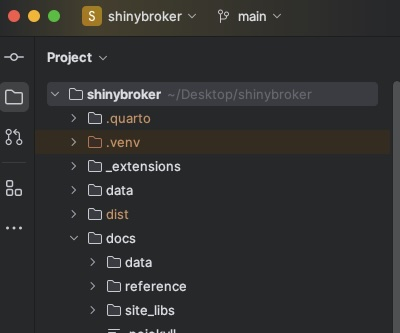

PyCharm is recommended but not required. The ShinyBroker package, and the examples in the documentation, were created with PyCharm. You certainly do not have to use PyCharm, but it is used in this article series to make the material accessible to readers who aren't old hands at dealing with environments, versions, and packages. If you follow this tutorial and use PyCharm, you will not have to worry about any of that; if you don't, then it's assumed you know what you're doing and are comfortable with your own setup.
Use TWS unless you're already comfortable with IBG. ShinyBroker will work fine with IB Gateway, but it's recommended to start out with TraderWorkstation so that you can use its UI and menus to verify/follow along with whatever you're building in ShinyBroker.
Install the following:
- Trader Workstation (TWS) You probably already have TWS installed if you're reading this article but if not, install it from IBKR's website. You may use the Demo account if you don't own an account at IBKR.
- Python: You'll need Python, of course. Install the latest stable version.
- PyCharm: Download & install from JetBrains.
Create a new PyCharm Project: Set up a PyCharm project for this tutorial and instruct it to use one and only one dedicated installation of Python. This way, you don't have to deal with all sorts of compatability problems that arise between different Python versions, package clashes, and so on.
- Open up PyCharm and create a new project. The "project" is simply a folder that stores all files related to this tutorial. You can name it whatever you want and store it in a convenient place on your computer. Give it a good, informative name that you like -- it's helpful.
-
Configure an Interpreter. You want to tell PyCharm to create a dedicated installation of Python only for use by this project, and you can do that by configuring an interpreter. You might have already created an environment for this project when you created a new project; if you did, then you'll see a little red folder named ".venv" in your project directory, like in the screenshot below:

If your PyCharm project does not have an interpreter configured, then you will probably be prompted to create one by a clickable banner within Pycharm. If you can't find the banner or if you closed it, you can use the interpreter settings menu under File > Settings. From the interpreter settings window, add a new local interpreter in your project folder. You should now see the little red ".venv" folder in your project directory like the one in the screenshot above. .venv is the installation of Python that your project will use.
- Verify that your project is using the correct interpreter. Do that by glancing at the bottom right-hand corner of the PyCharm window and checking that the file path points to the .venv folder in your project directory. As an example, in the screen snip below (taken from the lower right-hand side of the PyCharm window), it's clear that the project is using the interpreter it sees in the shinybroker folder on the Desktop (which is the correct one for that project to be using).